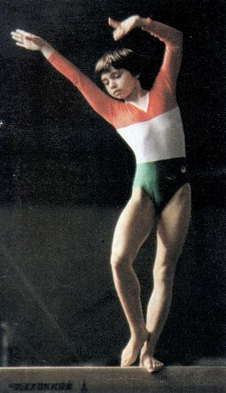

Eva Ovari (HUN)
1979 Hungarian International AA
Champion
Two-Time Olympian

Eva was born on April 28, 1961 in Dunaujvaros. She was the youngest Hungarian athlete at the 1976 Olympic Games.
Competition Results
1972
Pioneer Olympics (Cat. II): 1st AA
1973
Pioneer Olympics: 1st AA
1974
Jr. Friendship Tournament (Druzhba): 5th Team
1975
Jr. Friendship Tournament (Druzhba): 4th Team, 2nd V
1976
GDR-HUN Dual Meet: 5th AA
GEO-HUN Dual Meet: 2nd Team, 3rd AA
HOL-HUN Dual Meet: 4th AA
Hungarian International: 2nd AA
Milk Meet: 9th AA
Janos Asztalos Memorial: 1st AA
Olympics: 4th Team, 25th AA (prelims)
1977
European Championships: 11th AA, 4th B
Hungarian Masters Tournament: 1st AA, 1st B, 2nd FX, 3rd UB
Moscow News: 6th AA, 5th UB, 5th B
Paris Grand Prix: 3rd B
Riga International: 17th AA
1978
Champions All: 9th AA
GDR-HUN Dual Meet: 6th AA
HOL-HUN Dual Meet: 2nd AA
HUN-CSSR-POL-FRA: 2nd AA
Hungarian International: 2nd AA, 4th UB, 5th FX
Hungarian Masters Tournament: 1st AA
Ontario Cup: 2nd AA
Pioneer Intl. Gymnastics Classic: 1st B
SUI-HUN Dual Meet: 2nd AA
World Championships: 4th Team, 12th AA, 4th B
1979
European Championships: 11th AA
Hungarian Championships: 1st AA
Hungarian International: 1st AA
SUI-HUN Dual Meet: 3rd AA
World Championships: 7th Team, 22nd AA
World Cup: 9th AA, 7th UB, 8th B
1980
Golden Sands International: 8th AA
HUN-CSSR Dual Meet: 5th AA
Olympics: 5th Team, 29th AA (prelims)
1981
Cottbus International: 8th AA, 3rd UB
European Championships: 24th AA
GDR-HUN Dual Meet: 7th AA
1983
Hungarian International: 7th AA, 2nd B
ITA-HUN Dual Meet: 4th AA
Pre-Olympics: 14th AA, 7th V, 7th B
World Championships: 9th Team, 28th AA
1984
GDR-HUN Dual Meet: 6th AA
Hungarian International: 8th AA
This page was created on December
27, 2000 and was last updated on May 14, 2026.
© Gymn Forum